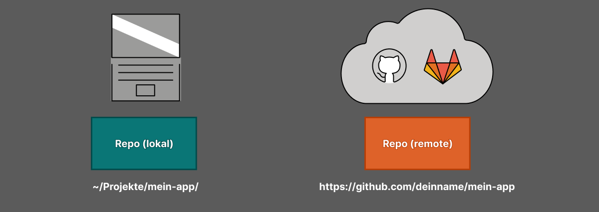
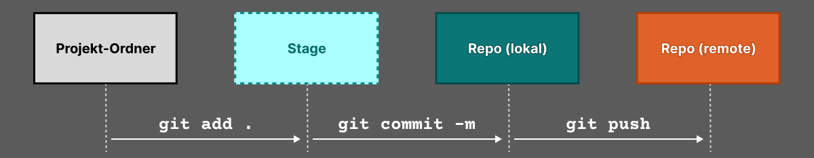

🦊 Git & Github
📦 Was ist ein Repository?
Ein Repository (kurz: "Repo") ist dein Projekt mit Versionsgeschichte.
Es enthält:
- Den aktuellen Code
- Alle bisherigen Versionsstände (Commits)
- Weitere Infos (z.B. Branches, Merges etc.)
📘 Ein Repository ist wie ein Tagebuch deines Codes.
🔄 Zwei Typen von Repositories

| Typ | Beschreibung | Beispiel |
|---|---|---|
| Lokales Repo | Auf deinem Computer mit | ~/Projekte/mein-app/ |
| Remote Repo | Auf GitHub, GitLab usw. | https://github.com/deinname/mein-app |
💡 Nutze
git init, um ein lokales Repo zu starten – odergit clone, um ein Remote-Repo zu holen.
🤔 Was ist ein Commit?
Ein Commit ist ein Speicherpunkt im Projekt.
Er enthält:
- Was wurde geändert?
- Wer hat es geändert?
- Wann?
- Warum? (→ Commit Message)
💧 Der Git-Commit-Workflow

- 📝 Make changes
- 📦 Stage changes
git add . - 💾 Commit changes
git commit -m <message> - 🤜🏼 Push changes
git push
🧠 Struktur einer guten Commit-Messagek
Eine Commit-Message folgt diesem Aufbau:
<type>(optional scope): kurze Beschreibung
Beispie:
chore: add folders for components and assets
🔤 Commit-Typen (nach Conventional Commits)
| Typ | Wann verwenden? | Beispiel |
|---|---|---|
| feat | Neue Funktion | feat: add login form with validation |
| fix | Bugfix | fix: correct typo in function name |
| docs | Dokumentation | docs: update README |
| style | Nur Formatierung | style: format code with Prettier |
| refactor | Code-/Strukturumbau ohne neues Verhalten | refactor: move utils to lib folder |
| test | Tests hinzugefügt oder geändert | test: add tests for login logic |
| chore | Setup, Struktur, Konfiguration | chore: setup folder structure |
| perf | Performance-Verbesserung | perf: cache API responses |
📁 Beispiele für Struktur-Commits
| Aktion | Commit Message |
|---|---|
| Neue Ordnerstruktur | chore: add initial folder structure |
| Dateien verschoben/umbenannt | refactor: move components to /ui/ |
| Platzhalterdateien angelegt | chore: add placeholder README files |
| Assets umorganisiert | chore: move images to /assets/img/ |
| Nur Dokumentation | docs: add API usage guide |
❌ Vermeide schlechte Messages wie:
- update
- more files
- final fix
- stuff
- changes (ohne Kontext)
✅ Bonus-Tipps
- Schreibe in Englisch (auch im deutschsprachigen Team)
- Denk an Leser in 3 Monaten (auch du selbst!)
- Sag nicht nur, was du gemacht hast, sondern was sich am Projekt ändert
🛠️ Git – Wichtige Befehle
| Befehl | Bedeutung | Beispiel |
|---|---|---|
git init |
Neues lokales Git-Repo erstellen | git init |
git clone <url> |
Repo von GitHub klonen | git clone https://github.com/user/repo.git |
git status |
Aktuellen Status anzeigen | git status |
git add <datei> |
Datei zur Staging-Area hinzufügen | git add main.py |
git add . |
Alle Änderungen hinzufügen | git add . |
git commit -m "Nachricht" |
Änderungen speichern (lokal) | git commit -m "Funktion hinzugefügt" |
git push |
Änderungen zu GitHub hochladen | git push |
git pull |
Änderungen von GitHub herunterladen | git pull |
git log |
Commit-Historie anzeigen | git log |